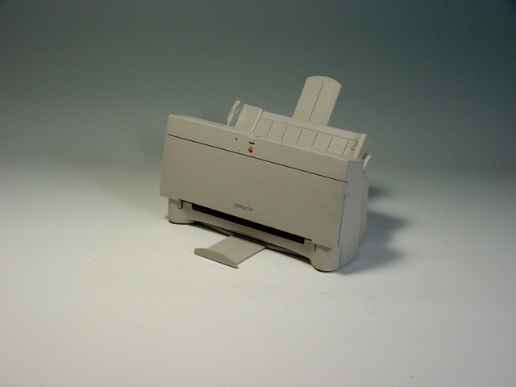

StyleWriter 1200
The StyleWriter 1200 was the third of Apple's line of inkjet serial printers, released after the StyleWriter II. Based on the same Canon engine, this model had faster printing speed than its predecessor, but used the same ink cartridge.
Price: $299.99